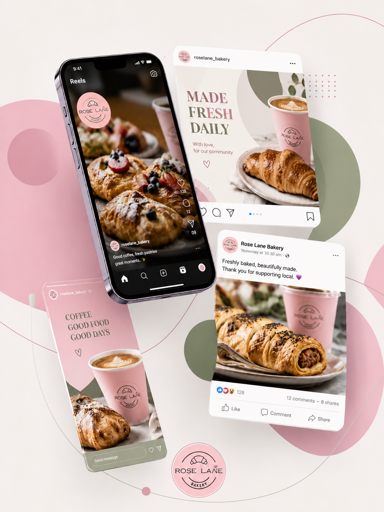

LOCAL BUSINESS MARKETING
Roselane Bakery
Product photography, seasonal campaigns and community event promotion that bring a local bakery's story to life online.

THE CHALLENGE
Making everyday bakes feel worth stopping for
As a neighbourhood bakery, Roselane's biggest asset is its product — but product alone doesn't fill a social feed. The bakery needed a steady supply of appealing photography and posts that could carry it through quiet weeks, seasonal peaks and one-off community events, without relying on a single big campaign.
THE APPROACH
Photography and content built around the calendar
I plan content around the bakery's natural rhythm: seasonal ranges, holidays and local events, pairing fresh product photography with social posts that highlight what's new and what's worth coming in for. When Roselane takes part in community markets or events, I extend that same visual style into event promotion, keeping the bakery's feed consistent whether it's a regular Tuesday bake or a weekend stall.
- Ongoing product photography for new and seasonal ranges
- Social content planning tied to the bakery's calendar
- Community market and event promotion
- A consistent, recognisable visual style across posts
THE RESULT
A feed that reflects the bakery, week to week
Roselane now has a content rhythm that keeps pace with the business itself — new bakes, seasonal moments and events are captured and shared as they happen, rather than requiring extra effort from an already busy team.
Want your local business to feel this consistent online?
I'd love to learn more about your business and explore how I can help.
Start a Conversation